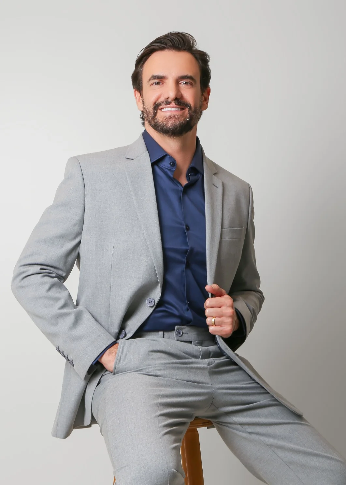
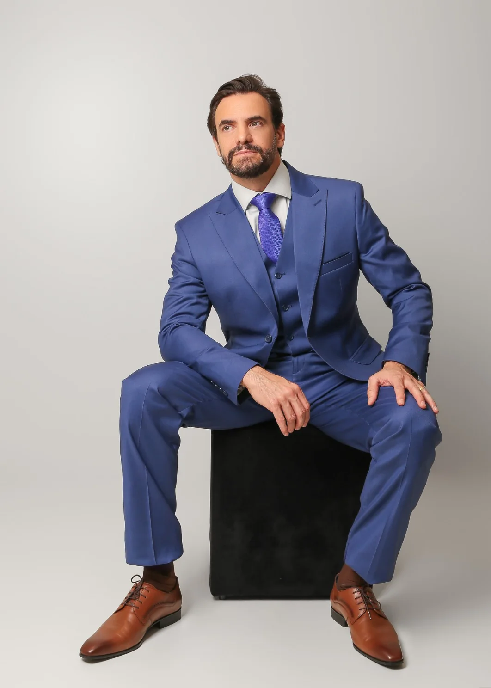
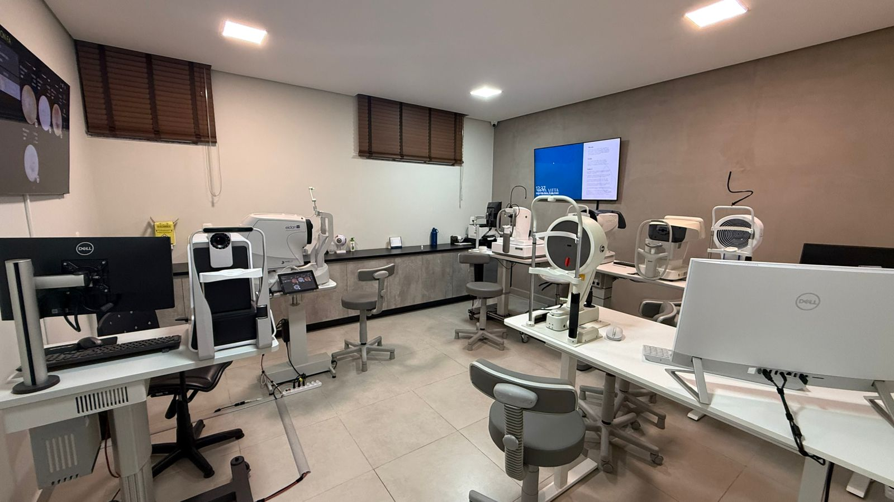
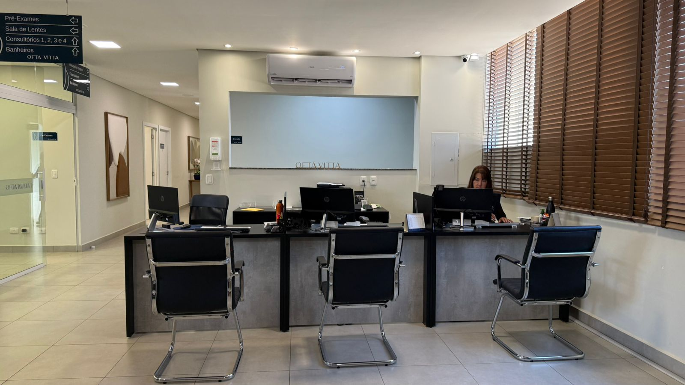
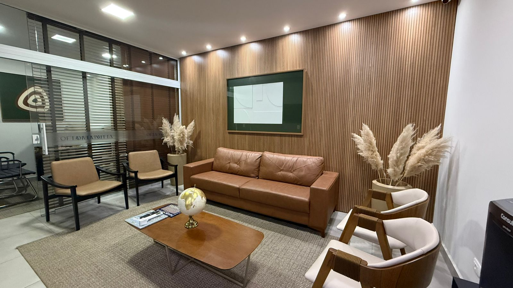
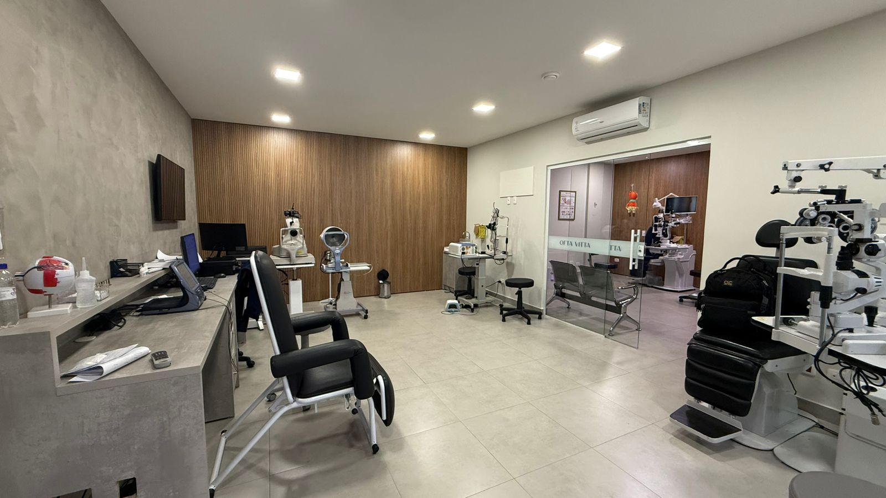
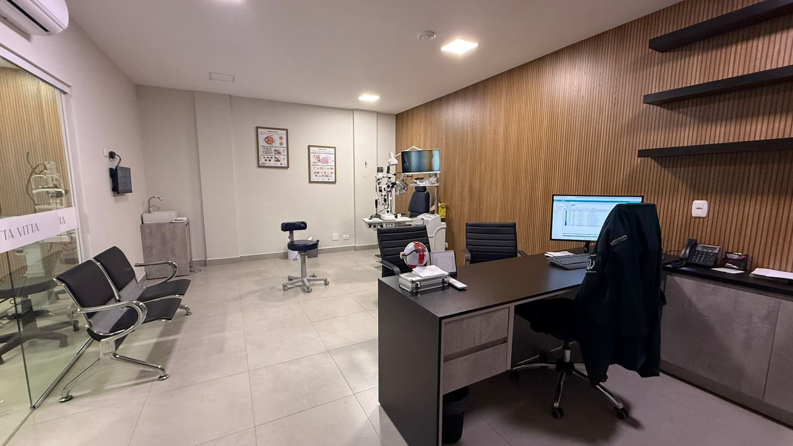
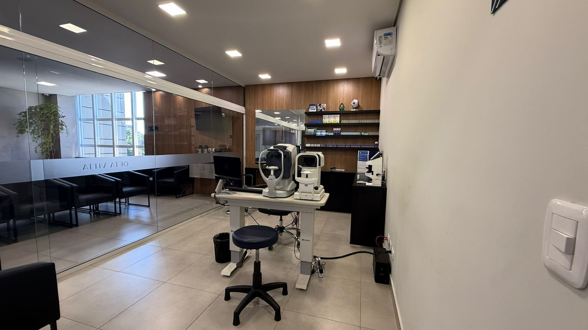

Cuidar da retina é cuidar do que faz você enxergar.
Diagnóstico preciso e tratamento das doenças da retina, do vítreo e da úvea — com tecnologia de ponta, estrutura de hospital e um atendimento que explica cada passo em linguagem clara. Em Umuarama, Campo Mourão e Palotina.

Muitas doenças da retina evoluem em silêncio. Quando há sintomas, o tempo passa a contar. O acompanhamento com um subespecialista faz a diferença entre tratar cedo e tratar tarde.
Subespecialista dedicado
Atuação focada em retina, vítreo e úvea — as estruturas internas do olho que exigem formação específica.
Estrutura de hospital
Atendimento no OftaVitta, hospital oftalmológico de referência, com tecnologia de diagnóstico de última geração.
Linguagem clara
Seu quadro, suas opções e os próximos passos explicados em linguagem do dia a dia — para decidir com segurança.
Sombra, cortina ou perda súbita de visão? Pode ser urgência.
O descolamento de retina é uma emergência oftalmológica: quanto antes for tratado, maiores as chances de preservar a visão. Diante desses sinais, não espere — fale conosco imediatamente.

Uma medicina que explica, acompanha e cuida.
"A retina é uma das estruturas mais delicadas do olho — e muitas de suas doenças evoluem em silêncio."
Médico oftalmologista com atuação dedicada às doenças da retina, do vítreo e da úvea. Une formação especializada, tecnologia de diagnóstico de ponta e um atendimento próximo, no qual cada etapa é explicada com clareza para que o paciente entenda seu quadro e decida com segurança.
Se você foi encaminhado pelo seu oftalmologista ou notou mudanças na visão, o caminho é o mesmo: uma avaliação completa, um diagnóstico preciso e um plano de cuidado construído para o seu caso.
- 01.Graduação em Medicina — UFSMUniversidade Federal de Santa Maria (RS) · 2005
- 02.Residência em OftalmologiaHospital dos Olhos de Londrina · 2006–2009
- 03.Especialização em Vítreo e Catarata2009–2011
- 04.Fellowship em Retina Clínica e CirúrgicaUSP — Ribeirão Preto
- 05.Título de especialista — RQE 720Retina · Registro de Qualificação de Especialista
Doenças da retina que tratamos.
Selecione uma condição para entender o que é, os sinais mais comuns e como pode ser tratada. Avaliação completa e conduta individualizada, do diagnóstico ao tratamento clínico ou cirúrgico.
-
Emergência oftalmológica: a retina se separa da parede do olho. Quanto antes tratada, maiores as chances de preservar a visão. Sinais: moscas volantes súbitas, flashes, sombra ou cortina.
-
O diabetes pode danificar os vasos da retina de forma silenciosa. Estima-se que cerca de 1 em cada 3 pessoas com diabetes apresente algum grau de retinopatia — o acompanhamento regular permite tratar antes de a visão ser comprometida.
-
Principal causa de perda da visão central após os 60 anos. O diagnóstico precoce ajuda a estabilizar a visão, especialmente na forma úmida, tratada com injeções intravítreas.
-
Pequena lesão no centro da retina que afeta a leitura e a visão de detalhes. Tem tratamento cirúrgico (vitrectomia).
-
Fina membrana que se forma sobre a retina e distorce a visão central. Pode ter indicação cirúrgica, conforme o impacto na visão.
-
Entupimento de veias da retina que causa embaçamento súbito, geralmente indolor. Requer avaliação rápida; tratada com injeções e laser conforme o caso.
-
Sangramento dentro do olho que embaça a visão de repente. Investigar a causa é essencial; a vitrectomia pode ser indicada.
-
Inflamação dentro do olho que pode comprometer a visão. Exige investigação da causa e tratamento especializado.
Descolamento de retina
A retina se separa da parede do olho — uma emergência oftalmológica. Quanto antes o tratamento acontece, maiores as chances de preservar a visão.
Sinais comunsComo pode ser tratado: cirurgia (vitrectomia, retinopexia), com caráter de urgência.
Mapeamento & OCT
Exames de imagem detalhados da retina para um diagnóstico preciso.
Injeções intravítreas
Tratamento clínico moderno para DMRI, retinopatia diabética e oclusões.
Laser de retina
Fotocoagulação para tratar e prevenir a progressão de lesões da retina.
Vitrectomia
Cirurgia de alta precisão para as doenças do vítreo e da retina.
Atendimento em uma estrutura completa e moderna.
O Dr. Paulo atende no OftaVitta, hospital oftalmológico de referência em Umuarama.
Um ambiente à altura da sua visão.
Recepção acolhedora, salas de exame equipadas e tecnologia de diagnóstico de última geração — pensadas para o seu conforto e a sua segurança.

Tecnologia de diagnóstico
Recepção
Lounge de espera
Equipamentos de última geração
Consultórios
Salas de examePrecisão onde a visão exige.
As cirurgias da retina estão entre as mais delicadas da oftalmologia. Realizadas com equipamentos modernos e técnica especializada, buscam preservar e recuperar a sua visão com segurança.
Cada procedimento é indicado após avaliação individual, sempre com o objetivo de proteger o máximo da sua visão.
Quando procurar um especialista em retina.
Alguns sintomas indicam que a retina pode estar em risco. Diante de qualquer um deles, procure avaliação o quanto antes. Diabéticos, pessoas com alta miopia e quem tem histórico familiar devem manter acompanhamento regular — mesmo sem sintomas.
- 01.Moscas volantes de repente
Aumento súbito de pontos, fios ou teias flutuando na visão.
- 02.Flashes de luz
Clarões ou relâmpagos, principalmente na periferia da visão.
- 03.Sombra ou cortina na visão
Uma área escura cobrindo parte do campo visual — sinal clássico de descolamento.
- 04.Visão distorcida
Linhas retas que parecem tortas ou onduladas ao ler ou olhar azulejos.
- 05.Mancha no centro da visão
Um ponto borrado ou escuro fixo no centro, que atrapalha ler e reconhecer rostos.
- 06.Perda súbita de visão
Queda rápida da visão em um dos olhos. Procure atendimento imediato.
Do primeiro contato ao tratamento.
Agende
Fale pelo WhatsApp e marque sua avaliação. Se tiver exames ou carta de encaminhamento, traga com você.
Avaliação completa
Exame detalhado da retina com equipamentos de última geração (mapeamento, OCT e demais exames).
Diagnóstico claro
Seu quadro e as opções de tratamento explicados em linguagem do dia a dia, sem pressa.
Plano e acompanhamento
Tratamento clínico ou cirúrgico conforme o caso — e acompanhamento contínuo da sua visão.
O que dizem os pacientes.
Avaliações verificadas dos pacientes, direto do Google.
Veja os depoimentos de quem já foi atendido pelo Dr. Paulo Igor Rauen — avaliações reais e verificadas no Google.Ver avaliações no Google →
Dúvidas comuns.
O que faz um especialista em retina?
É o oftalmologista com formação específica para diagnosticar e tratar as doenças da retina, do vítreo e da úvea — estruturas internas do olho responsáveis pela visão. Muitos desses quadros exigem exames e tratamentos que vão além da consulta oftalmológica de rotina.
Fui encaminhado pelo meu oftalmologista. Como funciona?
O encaminhamento é o caminho mais comum: o oftalmologista geral identifica um achado na retina e indica a avaliação com o subespecialista. Traga seus exames e o pedido de encaminhamento — o Dr. Paulo dá continuidade à investigação, define a conduta e mantém o seu médico informado sobre o acompanhamento.
Quando devo procurar avaliação da retina?
Sempre que surgirem sintomas como moscas volantes de repente, flashes de luz, sombra na visão, visão distorcida ou queda súbita da visão. Pessoas com diabetes, alta miopia ou histórico familiar também devem fazer acompanhamento regular, mesmo sem sintomas.
Diabético precisa acompanhar a retina?
Sim. O diabetes pode afetar a retina de forma silenciosa (retinopatia diabética) e é uma das principais causas de perda de visão em adultos. O acompanhamento regular permite tratar antes que a visão seja comprometida.
O tratamento é sempre cirúrgico?
Não. Muitas doenças da retina são tratadas de forma clínica, com medicações, laser ou injeções intravítreas. A cirurgia é indicada em casos específicos. A conduta é sempre individualizada, definida após a avaliação completa.
E se for urgência?
Sinais como sombra ou cortina na visão e perda súbita de visão exigem atendimento rápido. Entre em contato imediatamente pelo WhatsApp ou telefone — casos urgentes têm prioridade de avaliação.
Onde o Dr. Paulo atende?
Em Umuarama, no Hospital OftaVitta (Av. Celso Garcia Cid, 3542), e também em Campo Mourão e Palotina. Consulte as datas e os locais de atendimento em cada cidade pelo WhatsApp.
Como agendo uma consulta?
Pelo WhatsApp ou telefone (44) 99123-0861. A equipe orienta sobre horários, valores, locais de atendimento e o que levar no dia da avaliação.
Sua visão merece um olhar especializado.
Cuidar da retina no tempo certo faz diferença. Agende sua avaliação com o Dr. Paulo Igor Rauen.
Agende sua avaliação.
Fale com a nossa equipe e cuide da sua visão.